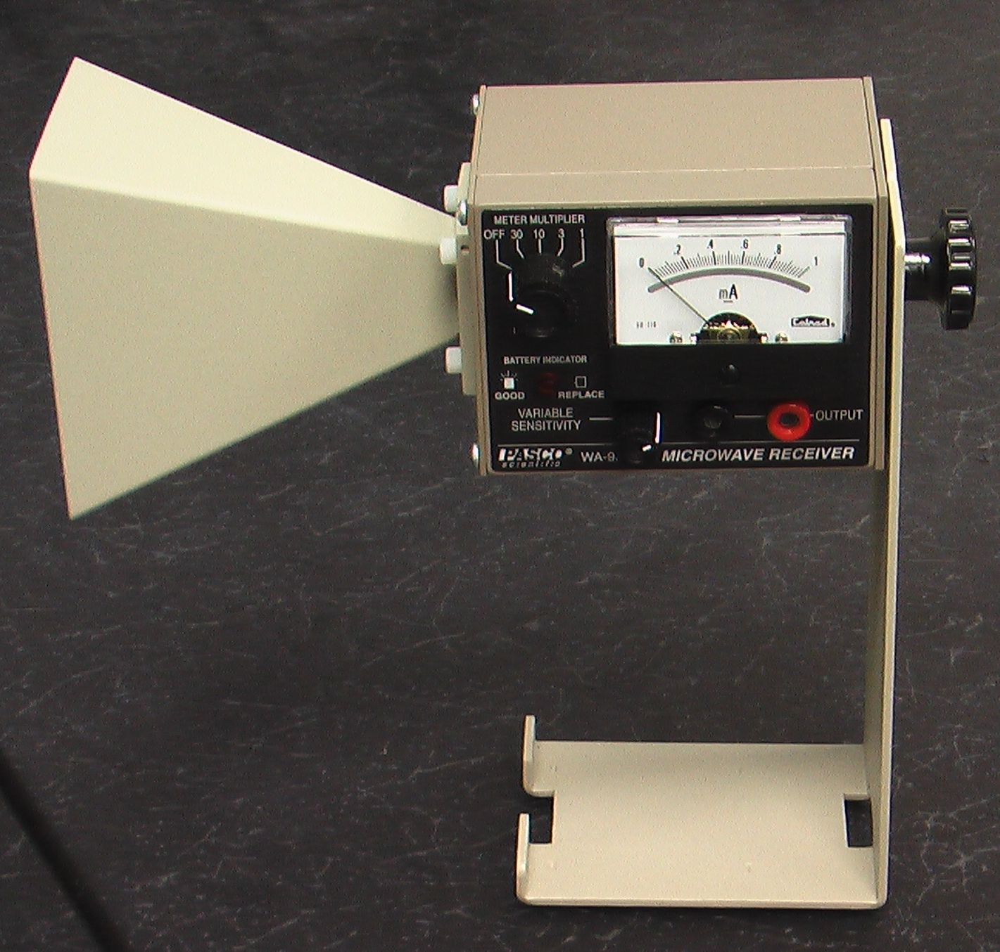
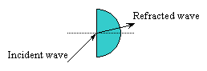
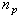

|
|

|
224 Physics Lab: Microwave Optics
|
223 & 224 Lab Overview |
Return to Physics 224 Labs
Purpose
The purpose of this lab experiment is to investigate the behavior of light
using a microwave transmitter and receiver.
 |
 |
| Microwave Transmitter |
Microwave Receiver |
Background
When light impacts a mirror, it is reflected such that the angle of incidence,
, equals the angle of reflection,
, or
Microwaves are light waves whose wavelengths are found on the electromagnetic spectrum
between 0.3m and 10-4m and frequencies between 109Hz and
1012Hz. (Incidentally, microwave ovens operate at wavelengths of 12.2cm.)
Microwaves which are created by the klystron used in these experiments have
a wavelength of slightly less than 3 cm as they propagate through air.
The microwave transmitter and receiver used in these experiments incorporate
large horn antennae and wave guides within the body of each to collect
the microwaves. Applying boundary conditions to an electromagnetic wave within
a wave guide reveals that the wave is an unattenuated
standing wave, propagating only
along the axis of the guide. However, when the wave exits the antenna and has
traveled sufficiently far away from the transmitter, the wave propagates as if
were in free space.
The intensity of light in free space
decreases as the square of the distance known as the familiar
inverse-square law:
The velocity of any wave is given by
When a light wave propagates from one medium to another, the wavelength of the
light wave is altered. The frequency of the wave, however,
does not undergo a change. From Snell's Law of Refraction,
a light wave is bent according to the following equation:
| |
|

|
|
Figure 1. Refraction through polyethylene beads.
|
We will use a Styrofoam hemisphere containing polyethylene beads to refract microwaves
as shown in the above figure.
where and 
are the index of refraction of air and polyethylene, respectively.
The index of refraction of a medium is defined as the
ratio of the speed of the wave in a vacuum to the speed of the wave in that medium,
or
Objectives
- Use the reflection plane, goniometer and microwave transmitter and receiver
to verify Equation 1, the Law of Reflection.
- Use a meter stick and the microwave apparatus to verify that
light intensity over a distance varies according to the
inverse-square law. (Data taken in this Objective may be used in Objective 3,
so read ahead before proceeding.)
- Use your knowledge of standing waves and the raw data from Objective 2
to determine the wavelength of the microwaves as they
pass through air. (Also determine the standard deviation of the
measurements.)
- Determine the speed of the wave as it propagates through air,
based on the index of refraction of air. From your calculation of
in Objective 3, determine the frequency of the wave
as it propagates in air.
- Use the goniometer, container of polyethylene beads and the microwave
apparatus to determine the index of refraction of polyethylene,
. Perform a propagation of uncertainty for
this objective.
- From your calculations in previous Objectives, determine the frequency,
wavelength and speed of the microwave as it propagates through the
polyethylene beads.
Equipment and setup
- (Figure 2.) The microwave transmitter.
- (Figure 3.) The microwave receiver.
- (Figure 4.) Microwave reflection plane and goniometer.
- (Figure 5.) Inverse square law setup.
- (Figure 6.) Index of refraction setup.
- (Figure 7.) Goniometer.
|
[Click on images to enlarge.]
|
Hints and Cautions
- Caution!!! Although the microwave power levels from this apparatus are
not harmful, microwaves do cause water molecules to resonate, therefore
never point the klystron (transmitter) at your body, especially toward your
eyes.
- Allow the klystron about 2 minutes to warm up before beginning your
experiment.
- The microwave receiver has a slow response time, therefore when taking
readings adjust the apparatus very slowly to ensure that
power fluctuations are detected.
Online Assistance
- Indices of Refraction
- A nice tutorial on light
- Optics Applets
- Various physics lessons from iPhysics
- Create plots of two data series on one graph
- Clemson Physics Lab Tutorials
- Measurement uncertainties
- Calculating the Standard Deviation using Excel
- Using error bars in Excel
Lab Report Template
Each lab group should
download the Lab Report Template
and fill in the relevant information
as you perform the experiment. Each person in the group
should print-out the Questions section and answer them individually.
Since each lab group will turn in an electronic copy of the lab report,
be sure to rename the lab report template file. The naming convention is as
follows:
[Table Number][Short Experiment Name].doc.
For example the group at lab
table #5 working on the Ideal Gas Law experiment would rename their template file
as "5 Gas Law.doc".
Questions
Each student should
download the questions.
Each person in the group
should print out the questions and answer them individually.
Discussing the questions as a group is acceptable, but each student is responsible
for turning in answers that represent their own work, not the work of others.
Nudge Questions
These Nudge Questions are to
be answered by your group and checked by your TA as you do the lab. They
should be answered in your lab notebook.
General Nudges
- From what point are the positions of the transmitter and receiver measured?
Objective 1 Nudges
- What is your gain set to? Why?
- Is there a minimum value for ? Why?
- What quantities will you plot? What do you expect the slope of the plot to be?
Objective 2 Nudges
- How can you tell if the inverse-square law is valid? What will you plot to show this?
- Why does the receiver show fluctuations in intensity as it is moved along the meter stick?
- Are you reading the intensity when the fluctuations are at maximums or minimums, or both? Why?
- To what gain is the receiver set?
- Should the gain (variable sensitivity) be kept constant? Why or why not?
- What is the uncertainty of the position measurement?
- What is the least count of the power reading?
- What is the uncertainty of the power reading?
Objective 3 Nudges
- Why does the receiver show fluctuations in intensity as it is moved along the meter stick?
- How do the fluctuation maximums vary with position? Is this what you expect?
- How are the positions of the maximums related to the wavelength of the microwave?
- How many measurements of were you able to make?
- What is the uncertainty of the wavelength measurements? How would you use Excel to calculate
the standard deviation measurements?
Objective 4 Nudges
- How will you calculate and
of the wave in air? What other information do you need for this?
- Do these values make sense?
Objective 5 Nudges
- What experimental methods will you use to measure ?
- Why is a hemispherical container used to hold the polyethylene beads?
- Does it matter which way the hemispherical container is oriented -- flat side or curved
side towards the transmitter?
- Can = 0° be used as a data point?
- Is the placement of the transmitter and receiver on the goniometer important?
That is, is their separation important to consider?
- What values will you plot for this Objective?
- What does the slope equal?
- What other information do you need to calculate ?
- Use the Online Assistance to ascertain an accepted value of
.
- Discuss the error associated with the fact the microwaves are not only refracted by the
polyethylene beads, but also the Styrofoam walls of the container. It may help to know that
Styrofoam is also known as polystyrene.
- What is the percent error of your experimental value?
Objective 6 Nudges
- How will you calculate ,
and of the wave in polyethylene? What other information
do you need for this?
- Do these values make sense?
- How do the , and
values here compare to those in air?
TA Notes
- This could combined with the next lab and could easily be a three-week lab!
Data, Results and Graphs
Answers to Questions
Lab Manual
CUPOL Experiments
As of now, there are no
CUPOL experiments
associated with this experiment.
If you have a question or comment, send an e-mail to
.
223 & 224 Lab Overview |
Return to Physics 224 Labs
|
|